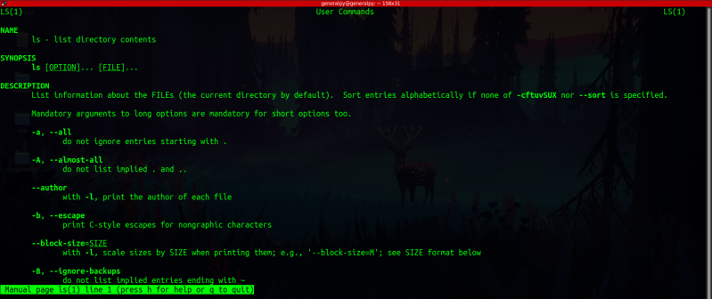
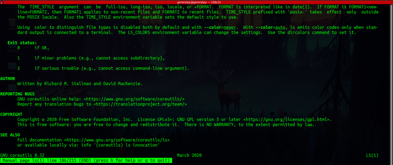
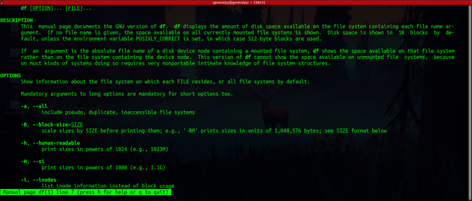
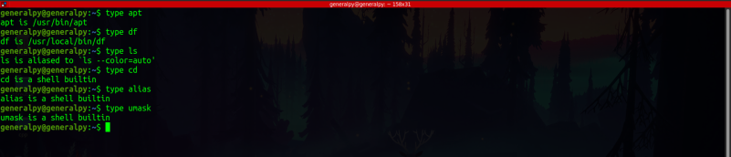
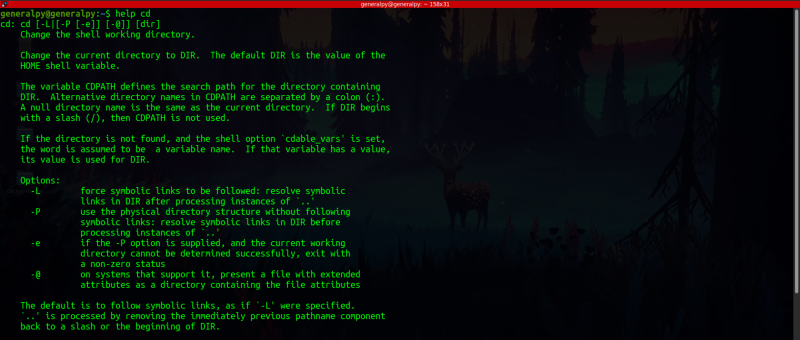
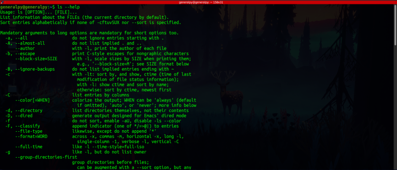
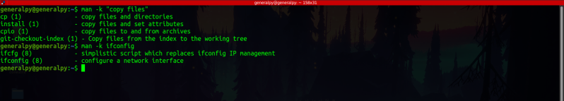
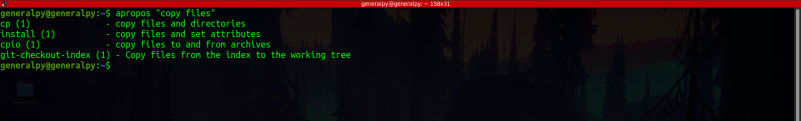

Linux contains a lot of commands. It is not required to learn all the commands as we can always get help about the commands.
man is a linux commnad which is short for manual which provides help for many commnads. It is like manual pages for commands.
Simplest way to use man command is to write man and then writing name of the command we want help for.
man <command>

Some legend on output of man command :-
First there is Name of the command and little description
Then there is Synopsis which contains how to use this command. In command usage, things inside square brackets are optional and things just before 3 ellipsis(...) can be may. Like in our example of ls, there can be many options and many files and they both are optional.
Then after synopsis there is full Description of the command which also contains description of options for some commands. In description, things which are bold are to be written as it is and things which are italicized or underlined must be replaced with some value. Like SIZE is underlined in our ls example which must be replaced with a size while running the command.
Then there is Author, Reporting Bugs, Copyright and a See Also section.
Some commands contain a different Option section instead of merging it into description.
Different options section in man page of df command :-

Navigating the man page :-
Up and Down arrow key :- Up and down arrow keys are used to move up and down in the man page.
g : Immediately reach to top of the man page.
G or Shift + G : Immediately reach to end of man page.
Ctrl + F or Space : To move one window forward. Imagine at one time there are 10 lines on screen at one time(one window) then pressing this will take you to next 10 lines.
Ctrl + B : To move one window backwards.
/string_to_search : Used to perform forward search in the man page i.e search for a string appearing after the position of cursor. It automatically highlights the string.
?string_to_search : Used to perform backward search in the man page i.e search for a string appearing before the position of cursor.
n : Used to navigate forward in the search window(after searching for text using above 2 command).
N or Shift + n : Used to navigate backward in the search window(after searching for text using above 2 command)
There are 2 types of commands in shell :-
1. Commands that are executable files on the system
2. Commands which are shell defualt(provided with the shell,built in to the shell)
Usually built in shell commands don't have a dedicated shell page.
To check which command is which type, type command is used.
type <command_name>If this returns a path then the command is an executable otherwise it is an shell built in command.

To get help for shell builtin commands, help command is used.
help <command_name>
One way to get help about commands is to use --help flag which is available for many commands.

Extra :- ifconfig command is used to get and set network configuration of the device. It is not included in some latest linux distros. ifconfig is part of net-tools package so to get ifconfig you can use your package manager to install net-tools
To search for sepcific key word inside all man pages following syntax can be used :
man -k <keyword or "keywords">

It is same as using the apropos command.
